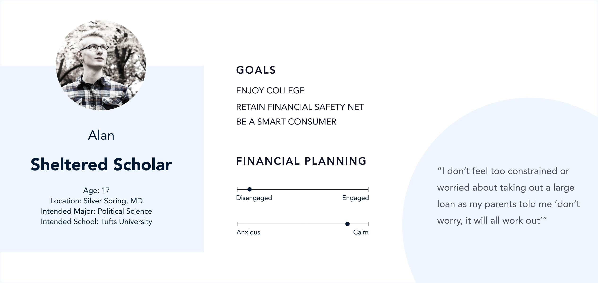
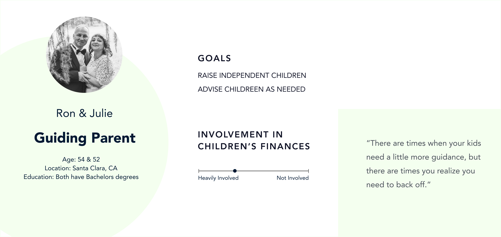
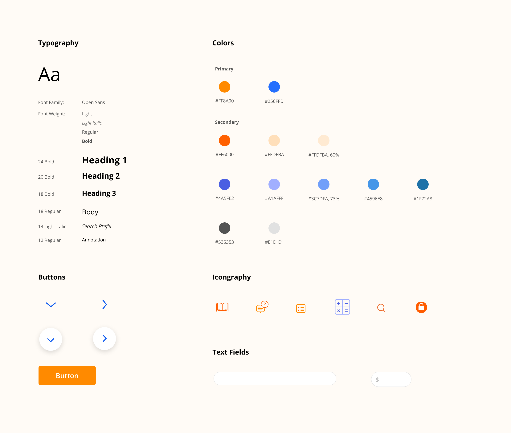

Design for Fintech:
Bridging the Resource Gap in Student Loans
My Role: Product Designer
Time: Jan - Aug 2020
Context: Carnigie Mellon University MHCI Capstone Project with Discover Student Loans
Team: Stacy Kellner, Cora Wang, Bidisah Roy, Aaron Bishop
Overview
The Problem
How might we help customers commit to one of DSL’s student loan products?
Our Solution: AppAssist that help you make a confident decision
Through our research, we found that customers, no matter students or parents, have a need and desire for more guidance, and we think the solution space lies in closing the resource gap - specifically, providing in-application guidance to customers.
Stakeholder Map: Student Loan Industry
There are multiple plays in the student loan industry: students, parents, lenders, educators, and universities. We created this stakeholer map to define the user groups we want to do primary research with: light research with all stakeholders, and more in-depth research with undergraduate students and their parents.
Primary Research
80+
+ Guerrilla Research
+ Semi-Structured Interview
+ Card Sorting
+ Intercept
+ Storyboarding
+ Think-Aloud Protocol
Key Insights
After two rounds of research and affinity mapping sessions, we synthesized our findings into a collection of models and insights.
When making financial decisions for their kids, parents want to feel like they’re in the driver’s seat.
“Parents are afraid of admitting what they don’t know to their children because they think it’s their responsibility to know.” - financial advisor
Parents accept that there can be a “right” amount of debt.
“My idea was that she shouldn’t graduate with more than $20k worth of debt. It just seems like a reasonable amount that can be paid off in 5 years. It's okay to go into debt for the right purpose. ” - dad
Student Persona
Sheltered Scholar: an incoming college student who largely rely on his parents to complete his student loan applications.
Parent Persona
Guiding Parent: parents who are involved in the student loan application process, but at the same time want to use this opportunity to improve their children's financial literacy.
Customer Journey: Paying for College
People don't want to get a loan. They want an education.
Student loan is a mean to the end.
AppAssist: Centralized resources as the guide
I created a design system for the team to stay consistent in design and shorten the path to implementation for Discover. Our choice of colors and typography are aligned with Discover’s brand: friendly, helpful, and refreshing.
AppAssist
on top of the current application interface, we designed AppAssist sidebar to guide the users through the student loan process. Sections in AppAssist include:

Use the interactive tool to figure out what is the "right" amount of student loans you need!
Our research shows that if a lender wants to help customers figure out which loan is right for them, they’ll need to take a light approach. People are wary of lenders (loan sharks) even though you’re also seen as experts.
Customers have different modes of learning!
AppAssist provides a hybrid form of resources to cater customers with different needs. Customers can toggle between different versions of the same resource, and the resources are powered by third-party student loan authorities!

Search any obscure loan terms you don't know in the glossary
Most of the tools and resources that people need already exist. However, they are not available in the application when they’re needed most.
Look up the FAQs related to this page to resolve your concerns
Customers usually need to switch out of the loan application in order to access the commonly asked questions as they often sit outside of the loan applications. By providing the right resources to customers in the application when they need it, we aim to close the resource gap.
Other Micro-interactions
An upgraded progress bar to track where you are throughout the application
Show or hide the Application Assistant depends on if you are a power user or a beginner. It's all up to you!
Prioritizing Assistance sections per application contents
User Feedback
"This toolbox gives me a much better idea of how student loans work! Without it, student loans are usually prolonged and intimidating."
— parent & 3-time student loan borrower

{kind=link}
{kind=link}